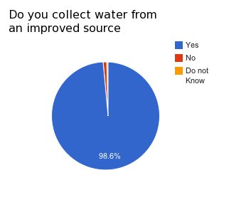
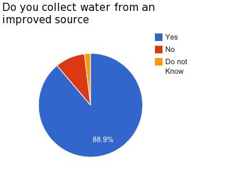
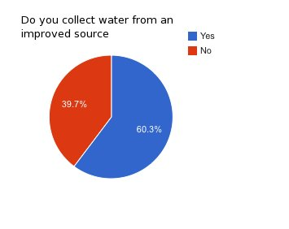
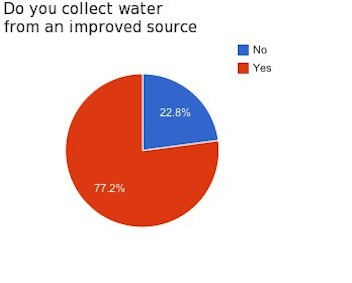

- Bolivia
- El Salvador
- Guatemala
- Honduras
- India
- Malawi
- Nicaragua
- Peru
- Rwanda
- Dominican Republic
Country: Bolivia
Year Began Working: 1997
Description of Work:
Since that time, Water For People has developed a strategic program to
address water and sanitation needs in four rural municipalities:
Cuchumuela, Villa Rivero, and Tiraque in the department of Cochabamba,
and San Pedro in the department of Santa Cruz. In 2008, Water For
People was invited by the Bolivian government to start work in one
peri-urban area outside of the city of Cochabamba, District 9. Within
each of these municipalities, Water For People works with local
government, communities, schools and local private and civil society
organizations to reach high levels of water and sanitation coverage in
these areas. In 2010 Water For People monitored projects it has
completed in each of the four regions.
*Data is from Water For People survey trips and is for regions surveyed
not entire country 
Country: El Salvador
Year Began Working: 2010
Description of Work:
Monitoring school based SWASH+ programs of our regional partner
organizations.
Country: Guatemala
Year Began Working: 1994
Description of Work:
In the 14 years following the implementation of Water For People's
first project, more than 100 water, sanitation and hygiene initiatives
were implemented in departments throughout the country, including
Chimaltenango, Huehuetenango, Sololá, and Quiché. In 2007, Water For
People-Guatemala developed a strategic plan to work exclusively in the
department of Quiché. By focusing its efforts only in Quiché, Water For
People-Guatemala believed it could maximize existing partnerships and
staff time to more effectively serve communities. Quiché was also
selected because of its great need: the department has the highest
level of poverty in the country and very low levels of water and
sanitation coverage. In 2010 Water For People monitored projects it has
completed in Quiche and conducted baseline assessments and monitored
school based SWASH+ projects for organizations working in partnership
with Water For People. In 2010 Water For People also completed a
baseline assessment in a new region of Quiche and documented the
conditions of existing water points.
*Data is from Water For People survey trips and is for regions surveyed
not entire country 
Country: Honduras
Year Began Working: 1996
Description of Work:
From 1996 to 2006, Water For People-Honduras worked with partner
organizations in over 90 rural communities. In 2007, Water For
People-Honduras developed a regional-based strategy, which targets
specific districts and strives to provide everyone in these areas – all
communities, schools and health clinics – with access to safe drinking
water and toilets. To achieve this, Water For People-Honduras partners
with the local government, private sector and local NGOs to strengthen
their ability to support comprehensive water and sanitation services
throughout the districts. This includes harnessing the power of local
businesses to supply sustainable operation and maintenance support to
communities. Water For People-Honduras’ work focuses efforts in mostly
rural communities throughout the municipalities of Chinda, El Negrito,
and San Antonio de Cortés. In 2010 Water For People monitored projects
it has completed in Chinda, El Negrito and San Antonio and conducted
baseline assessments and monitored school based SWASH+ projects for
organizations working in partnership with Water For People. In 2010
Water For People also completed a baseline assessment in a new
municipality and documented the conditions of existing water points.
Country: India
Year Began Working: 1996
Description of Work:
India Water For People began working in West Bengal in 1996 with a
small pilot project to help eliminate the naturally occurring arsenic
in water supplies. In collaboration with Bengal Engineering and Science
University (BESUS), Water For People introduced low cost and
appropriate technology for arsenic mitigation in the districts of Nadia
and North 24 Parganas. The program continued to grow and expanded
further into communities and schools in districts not affected by
arsenic. In 2005, Water For People established as a full-fledged
country program with an office in Kolkata. Programming today includes
water, sanitation and health and hygiene education in schools and
communities in six districts in West Bengal: South 24 Parganas, East
Medinipur, North 24 Parganas, Nadia, Purulia and Murshidibad. Water For
People-India works closely with the local government, the private
sector and 11 local non-governmental organizations to implement its
programs. In 2010 Water For People monitored projects it has completed.
Country: Malawi
Year Began Working: 2000
Description of Work:
In 2006 Water For People Malawi changed its strategy from working on
small projects in different areas to concentrating its effort on three
regions: peri-urban Blantyre, the rural districts of Chikhwawa, and
Rumphi. Within these regions, Water For People-Malawi works with local
partners to provide long lasting water, sanitation and hygiene
solutions to communities and schools. Water For People-Malawi strives
to transform the rural water and sanitation sector by demonstrating
alternative models that place entrepreneurship at the forefront of its
programs. Peri-Urban Blantyre In 2009 and 2010 Water For People
completed a comprehensive baseline assessment of all the existing water
points in 14 densely populated low income areas surrounding Blantyre.
They documented the condition of more than 500 water points and have
constructed or rehabilitated 76 water kiosks in that area. Rumphi In
2010 Water For People conducted a baseline assessment of all the
existing water points in three Traditional Authority regions in Rumphi
and documented the condition of more than 200 water points.
*Data is from Water For People survey trips and is for regions surveyed
not entire country 
Country: Nicaragua
Year Began Working: 2010
Description of Work:
Nicaragua In 2010 Water For People monitored school based SWASH+
programs of our regional partner organizations.
Country: Peru
Year Began Working: 2008
Description of Work:
Peru Water For People-Peru initiated its program in late 2008 with the
establishment of the Regional Office for South America program in Lima.
Given the need and clear lack of services in the Peruvian rural areas,
Water For People selected several rural municipalities: Cascas, La
Libertad, Majes, Arequipa and Tumbaden, Cajamarca. Within each of these
municipalities, Water For People will start to work with local
government, communities, schools and local private and civil society
organizations to reach high levels of water and sanitation coverage. In
2009 Water For People completed a baseline assessment of Cascas and
Tumbaden and documented the condition existing water points.
Country: Rwanda
Year Began Working: 2008
Description of Work:
Water For People opened an office in Kigali, Rwanda in June of 2008.
Since then, Water For People-Rwanda has been working with various
stakeholders to determine how they can best provide sustainable
drinking water, sanitation and hygiene education to the people of
Rwanda. Because of the disparity between urban and rural coverage, and
as a result of conversations with the Government of Rwanda, Water For
People-Rwanda has focused its work on rural areas within the districts
of Kicukiro and Rulindo. Field initiatives were first initiated in 2009
and Water For People-Rwanda completed programming in four schools, as
well as extended access to safe drinking water to 18 communities. With
the strong support of the government and local non-governmental
partners, Water For People-Rwanda continues to expand its programming
and influence within the water and sanitation sector. In 2010 Water For
People completed a baseline assessment of 3 sectors of Rulindo and
documented the condition of more than 100 existing water points.
*Data is from Water For People survey trips and is for regions surveyed
not entire country 